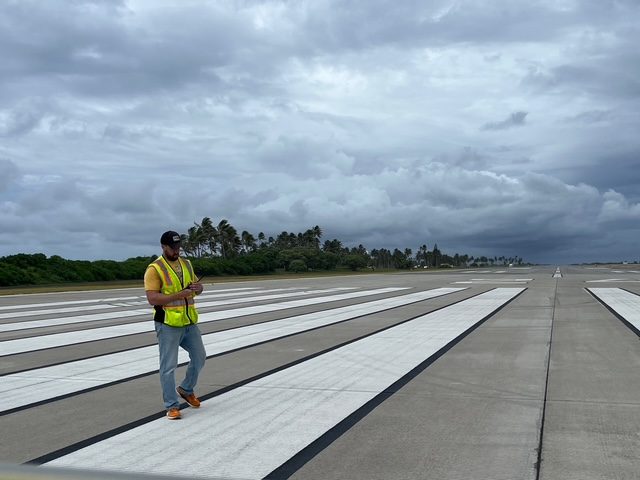

Airfield Infrastructure and Pavement Engineering
Professional Summary
I am a geospatial engineer and infrastructure specialist working with the U.S. Army Engineer Research and Development Center (ERDC). My professional experience includes geographic information systems (GIS), remote sensing, airfield pavement evaluations, and geospatial analysis.
I specialize in developing GIS applications, conducting infrastructure assessments, and supporting engineering research. My work involves both field investigations and computer-based geospatial analysis to support military infrastructure management.
Professional Experience
Geo-Information Specialist (DJ-03)
U.S. Army Engineer Research and Development Center (ERDC)
May 2020 - Present
I serve as an Assistant Program Manager and Evaluation Team Leader for the Army Airfield Pavement Evaluation Program.
- Conduct structural and condition assessments of military airfields throughout the world.
- Develop GIS maps, dashboards, and interactive web applications.
- Lead multidisciplinary teams during field evaluations and infrastructure assessment missions.
- Prepare technical engineering reports supporting pavement management and military operational readiness.
- Perform geospatial analysis using ArcGIS Pro, ArcGIS Online, and other mapping software.
Corporal / Team Leader
U.S. Army National Guard
May 2014 - May 2021
Served as a team leader responsible for personnel training, mission planning, logistics, and operational readiness.
Education
Texas A&M University
Master of Geoscience in Geographic Information Science and Technology
Expected May 2027 | GPA: 4.00
University of Arkansas
Graduate Certificate in Geospatial Technologies
Completed December 2023
Mississippi State University
Bachelor of Science in Wildlife, Fisheries, and Aquaculture
Minor in Geospatial Technologies and Remote Sensing
December 2019 | Cum Laude
Jackson State Community College
Associate of Science in General Studies
December 2016 | Magna Cum Laude
Technical Skills
GIS Software
- ArcGIS Pro and ArcGIS Online
- QGIS and Google Earth Pro
- ArcGIS Dashboards and Experience Builder
Programming and Databases
- Python and R
- PostgreSQL and PostGIS
- FME Workbench
Engineering and Field Equipment
- AutoCAD
- PAVER and PCASE
- Falling Weight Deflectometer (FWD)
- Dynamic Cone Penetrometer (DCP)
- LiDAR and GPS Data Collection
Selected GIS Projects
Aircraft Routing and AGL Application
Developed an interactive GIS application that integrates Allowable Gross Load (AGL) data with airfield pavement sections. The application supports aircraft routing decisions and pavement capacity assessments.
Airfield Pavement GIS Dashboard
Developed a GIS dashboard displaying pavement condition, structural capacity, and maintenance information to support infrastructure management.
SPACI Calculator
Developed a Semi-Prepared Airfield Condition Index calculator to automate distress analysis and improve the evaluation of unpaved airfields.
Research and Technical Reports
Contributed to technical engineering reports, conference papers, and research involving airfield pavements and geospatial decision-support technologies.
Contact Information
Location: Vicksburg, Mississippi
Email: colton.s.rodgers@erdc.dren.mil
GitHub: View My GitHub Profile